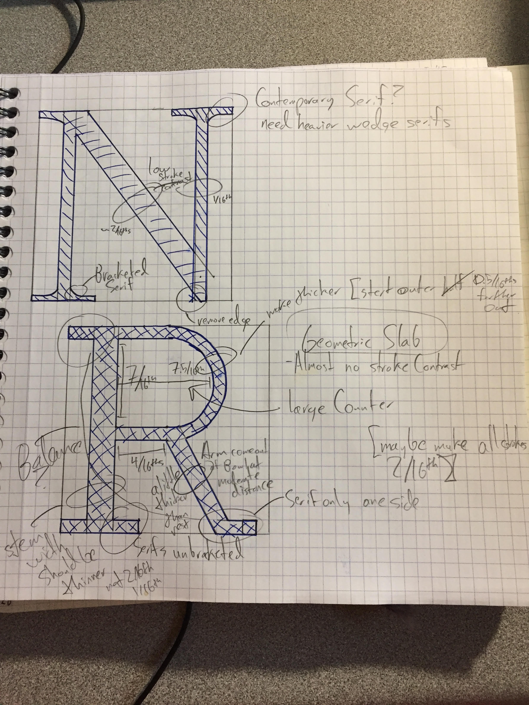
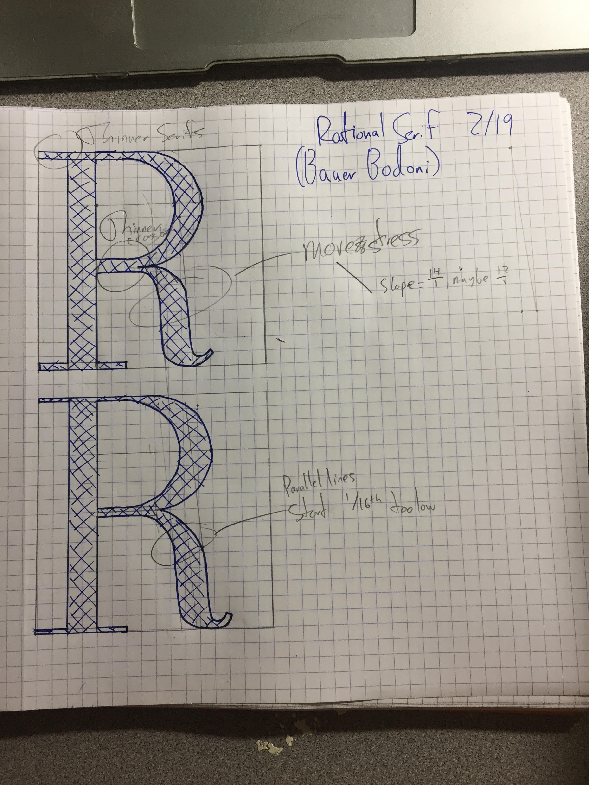
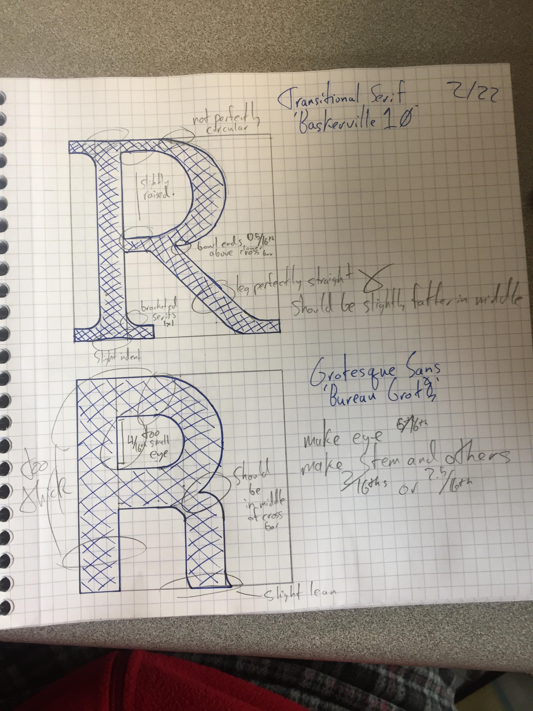
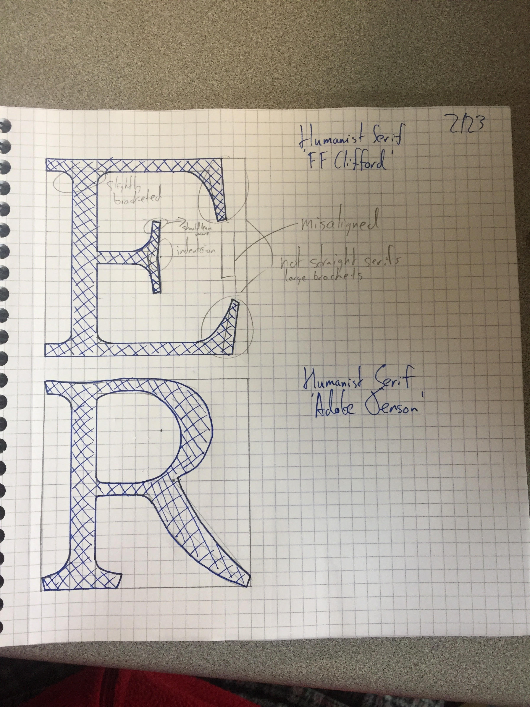
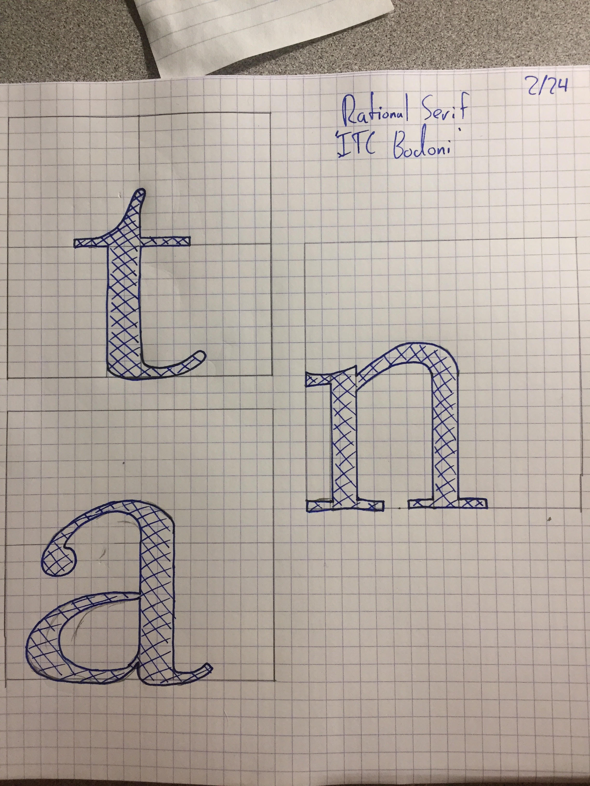

Contemporary Serif 'N' and Geometric Slab 'R' 2/13
Rational Serif 'R' (Bauer Bodoni) 2/19
Transitional Serif 'R' (Baskerville 10) and Grotesque Sans 'R' (Bureau Grot) 2/22
Humanist Serif 'E' (FF Clifford) and Humanist Serif 'R' (Adobe Jenson) 2/23
Rational Serif 't', 'a', 'n' (ITC Bodoni)
